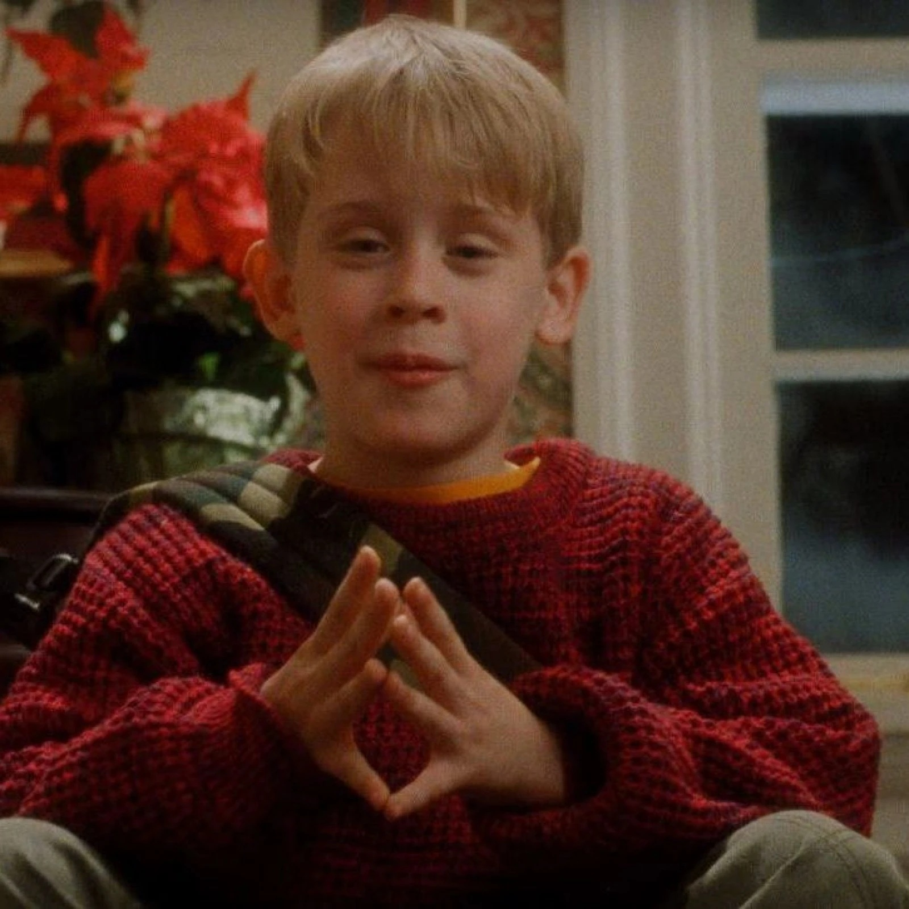

Wet Bandits Return
The Wet Bandits are back on Bay Hill Drive. Help Kevin choose the traps and send those guys right back to jail!

Wet Bandits Return
Scene moment
The Wet Bandits are back on Bay Hill Drive. Help Kevin choose the traps and send those guys right back to jail!
